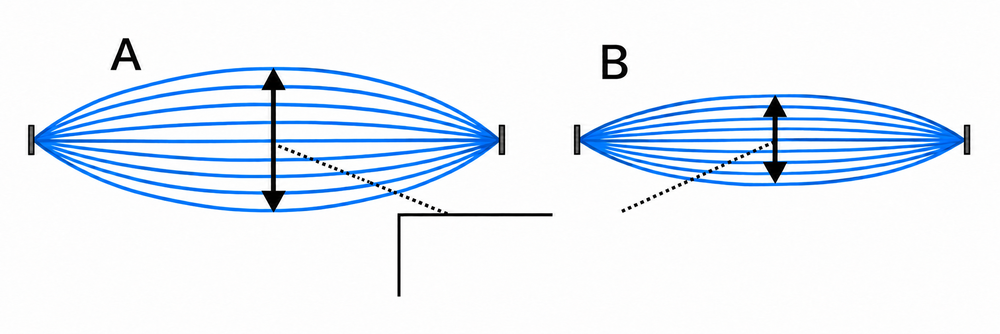

1音の伝わり方(例題1)
📖 江原予備校テキストより
丸底フラスコの中に鈴をつるし、真空ポンプで空気をぬく実験です。
✏️ 練習1:空気をぬくと音はどうなる?

例題1の実験
問1真空ポンプで空気をぬく前に、フラスコを振ると、鈴の音が聞こえる。
○ 空気があるときは、鈴の音の振動が空気を伝わるので、音が聞こえます。
問2空気をぬいてからフラスコを振ると、鈴の音が聞こえなくなった。その理由として正しいものはどれか。
正解はア。フラスコ内の空気がなくなったので、鈴の音の振動が伝わらず、音が聞こえなくなりました。
問3「音は( )中をつたって聞こえる」ということが言える。( )にあてはまる語はどれか。
正解はウ。実験の結果から、音は空気中をつたって聞こえることが分かります。
問4空気をぬくと、鈴は振動しなくなる。
× 鈴は振動して音を出していますが、空気がないので、その振動が耳まで伝わらないだけです。
2音さによる音の実験(例題2)
📖 江原予備校テキストより
同じ高さの音がでる音さAとBをむかいあわせにおき、Aをたたく実験です。
✏️ 練習2:音さの共鳴

図1(板なし)と図2(板あり)
問1図1のように音さAとBをむかいあわせにおき、Aをたたくと、Bはどうなるか。
正解はア。Aの音の振動が空気を伝わってBに届き、Bが鳴り出します。
問2図2のように間に板をはさんでAをたたくと、Bはどうなるか。
正解はイ。板が空気の振動をさえぎるので、Bには伝わらず、Bは鳴りません。
問3図2でBが鳴らなかった理由はどれか。
正解はウ。板により、空気の振動がさえぎられてBに伝わらなかったので、Bは鳴りませんでした。
問4同じ高さの音を出す音さAの振動が音さBに伝わり、Bが鳴ることを共鳴という。
○ 正解です。共鳴は、同じ高さの音を出す音さの間で起こります。
3弦の音(例題3)
📖 江原予備校テキストより
モノコード(1本の弦)を使って、音の高さや大きさを調べます。{ }のうち正しいものを選びます。
✏️ 練習3:弦の音の高さと大きさ

図3 モノコード(ABの弦はBCの弦より短い)
問1図3のABの弦のほうがBCの弦より短いとき、Pの部分をはじくとどんな音が出るか。
正解はア。短い弦のほうが高い音が出ます。ABは短いので、Pをはじくと高い音が出ます。
問2同じ図3で、Qの部分をはじくとどんな音が出るか。
正解はイ。BCの弦は長いので、Qをはじくと低い音が出ます。

図4 おもりをつるす装置
問3図4でおもりを重くしていくと、弦を引っぱる張力は強くなる。音は次第にどうなるか。
正解はア。張力が強くなるほど、高い音が出ます。

図5 太い弦(m)と細い弦(n)
問4図5のように、太い弦mと細い弦nを同じ張力のもとにそれぞれはじいた。高い音が出るのはどちらか。
正解はイ。細い弦のほうが高い音が出ます。太い弦は低い音です。

弦を振動させるときの、AとBのようす
問5図は、弦が大きくふるえるようすを表している。弦の大きなふれの大きさを表す語として、図の□にあてはまるものはどれか。
正解はイ。弦を振動させるとき、最も大きく振動する部分の大きさを振幅といいます。
問6図でAはBより振幅が大きい。AはBより、どんな音か。
正解はア。振幅が大きいほど、大きい音が出ます。
問7弦が細いほど、高い音が出る。
○ 正解です。重要事項①のとおり、弦が細いほど高い音が出ます。
問8弦を引っぱる張力が小さいほど、高い音が出る。
× 張力が大きいほど、高い音が出ます。小さいと低い音になります。
4音の高さ、大きさと速さ(例題4)
📖 江原予備校テキストより
オシロスコープの波の形と、音の速さを使った計算です。
✏️ 練習4:波の形と音の速さ

マイクとオシロスコープ
問1音の高さや大きさは、オシロスコープの波の形で見ることができる。
○ 正解です。マイクで拾った音の波を、オシロスコープで見ることができます。
問2人が聞くことのできる音の振動数の範囲として、正しいものはどれか。
正解はイ。人が聞くことのできる音の振動数は、約20Hzから20,000Hzです。

左上がA、右上がB、左下がC、右下がDの波
問3AとBは振幅が同じである。同じといえるものはどれか。
正解はア。振幅が同じなので、同じ大きさの音です。波の数(振動数)がちがうので、高さはちがいます。
問4AとBを比べると、高い音はどちらか。
正解はア。波の数(振動数)がAのほうが多いので、Aのほうが高い音です。
問5AとCは、振幅も振動数も同じである。AとCの音について、正しいものはどれか。
正解はア。振幅も振動数も同じなので、同じ大きさで同じ高さの音です。
問6AとDは、振動数が同じである。AとDの音について、正しいものはどれか。
正解はイ。振動数が同じなので同じ高さの音です。振幅がDのほうが大きいので、Dのほうが大きい音です。

観測者と花火の距離(x m)
問7花火が夜空で爆発して3秒たったときに音がした。音の速さを340m/秒とすると、花火までの距離は何mか。
正解はウ。距離＝音の速さ×時間＝340×3＝1020m です。
問8花火の音が聞こえるまでの時間が長いほど、花火までの距離は遠い。
○ 距離＝音の速さ×時間なので、時間が長いほど距離は遠くなります。
問9雷の稲妻が見えてから5秒後に、雷の音が聞こえた。光は一瞬で届くものとし、音の速さを340m/秒とすると、雷までの距離は何mか。
正解はウ。距離＝音の速さ×時間＝340×5＝1700m です。